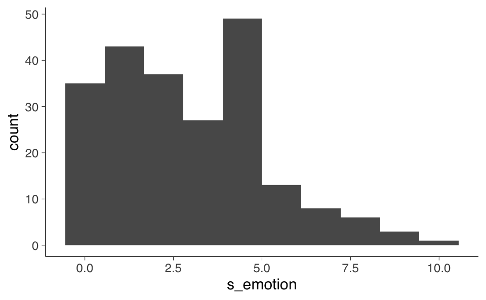
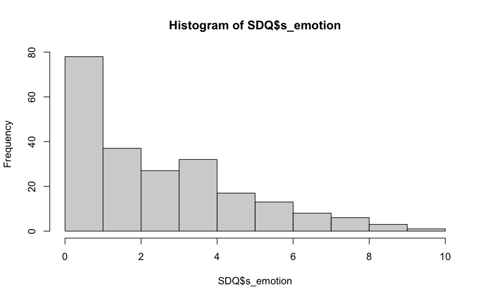
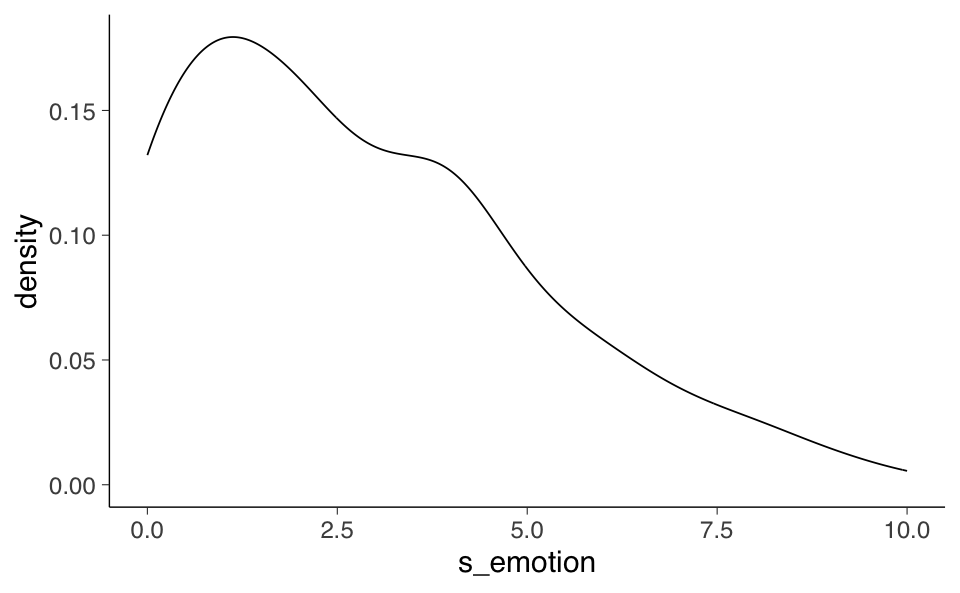
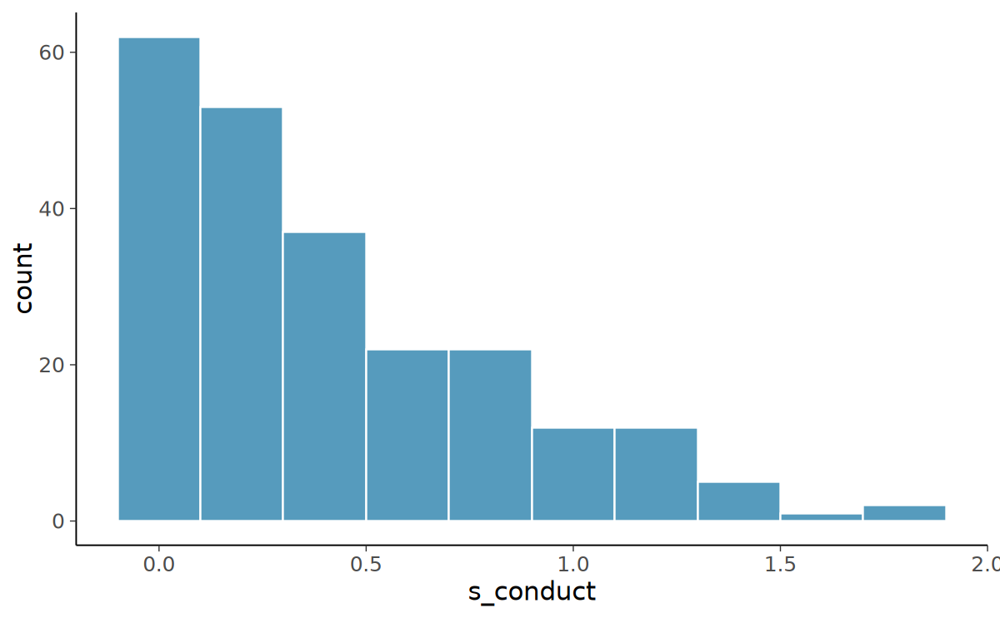

source("../../code/_common.R")3 ✏️ Esercizi
Prerequisiti
Concetti e Competenze Chiave
Preparazione del Notebook
3.1 Scaling Likert
In questo tutorial esamineremo i dati di un questionario ordinale. Gli obiettivi saranno il punteggio totale e lo scaling normativo.
Il Strengths and Difficulties Questionnaire (SDQ) è un breve questionario di screening comportamentale riguardante bambini e adolescenti di età compresa tra 3 e 16 anni. Esiste in diverse versioni consultabili su http://www.sdqinfo.org/. Dal sito è possibile scaricare il questionario, il metodo di scoring e le norme del test.
La versione autovalutativa (SDQ Pupil) include 25 item che misurano 5 scale (faccette), con 5 item ciascuna:
- Sintomi Emotivi somatico preoccupazioni triste attaccamento paura
- Problemi di Condotta scatti ubbidisce* litiga mente ruba
- Iperattività irrequietezza agitato distratto riflessivo* attento*
- Problemi con i Peer solitario amico* popolare* vittima di bullismo vecchio migliore amico
- Pro-sociale prendersi cura condivide gentilezza aiuta
Ai partecipanti viene chiesto di valutare ciascuna domanda utilizzando le seguenti opzioni di risposta: 0 = “Non vero” 1 = “Un po’ vero” 2 = “Certamente vero”
NOTA che alcuni item del SDQ sono reverse: item a punteggio invertito – punteggi più alti della scala corrispondono a punteggi inferiori degli item. Ad esempio, l’item “Di solito faccio quello che mi dicono” (variabile ubbidisce) è reverse dei Problemi di Condotta. Ci sono 5 item di questo tipo nel SDQ; sono contrassegnati nella tabella sopra con asterischi (*).
I partecipanti a questo studio sono alunni di seconda media della stessa scuola (N=228). Si tratta di un campione di comunità e non ci aspettiamo che molti bambini abbiano punteggi al di sopra delle soglie cliniche. Il SDQ è stato somministrato due volte, la prima volta quando i bambini hanno appena iniziato la scuola secondaria (erano in anno 7), e un anno dopo (erano in anno 8).
3.2 Emotional Symptoms scale
Questa scala non contiene item reverse.
Importiamo i dati in R.
load("../../data/data_sdq/SDQ.RData")
glimpse(SDQ)Rows: 228
Columns: 51
$ Gender <dbl> 1, 1, 1, 1, 1, 1, 1, 1, 1, 1, 1, 1, 1, 1, 1, 1, 1, 1, 1, 1, 1~
$ consid <dbl> 1, 2, 2, 2, 0, 2, 2, 2, 2, 2, 2, 2, 2, 2, 2, 2, 1, 2, 2, 2, 2~
$ restles <dbl> 2, 0, 0, 0, 1, 0, 2, 1, 2, 0, 1, 1, 0, 1, 0, 2, 0, 1, 1, 1, 0~
$ somatic <dbl> 2, 2, 0, 0, 2, 1, 0, 0, 1, 0, 0, 2, 0, 0, 1, 2, 1, 1, 1, 1, 1~
$ shares <dbl> 1, 1, 2, 2, 0, 2, 2, 2, 2, 2, 1, 2, 2, 2, 2, 2, 1, 2, 1, 2, 2~
$ tantrum <dbl> 0, 0, 0, 0, 1, 0, 2, 0, 2, 0, 0, 1, 0, 1, 1, 2, 0, 1, 1, 1, 0~
$ loner <dbl> 0, 0, 0, 0, 0, 0, 0, 2, 2, 0, 0, 1, 0, 0, 0, 1, 0, 0, 2, 2, 0~
$ obeys <dbl> 2, 2, 2, 2, 0, 2, 2, 2, 2, 2, 1, 1, 2, 2, 1, 2, 2, 2, 1, 2, 2~
$ worries <dbl> 1, 0, 0, 0, 1, 0, 1, 0, 0, 0, 0, 2, 0, 1, 2, 0, 1, 1, 2, 1, 0~
$ caring <dbl> 2, 2, 2, 1, 2, 2, 2, 2, 2, 2, 1, 2, 2, 2, 2, 2, 1, 2, 2, 1, 2~
$ fidgety <dbl> 0, 0, 0, 0, 0, 0, 2, 0, 0, 0, 1, 1, 0, 0, 0, 1, 0, 0, 0, 1, 0~
$ friend <dbl> 2, 2, 2, 2, 0, 2, 2, 2, 2, 2, 1, 2, 2, 2, 2, 2, 2, 2, 1, 2, 2~
$ fights <dbl> 0, 0, 0, 0, 0, 0, 0, 0, 0, 0, 0, 0, 0, 0, 0, 0, 0, 0, 0, 0, 0~
$ unhappy <dbl> 0, 0, 0, 0, 0, 0, 1, 0, 0, 0, 0, 1, 0, 0, 1, 0, 0, 0, 2, 1, 0~
$ popular <dbl> 2, 2, 2, 1, 1, 2, 2, 2, 2, 2, 2, 2, 1, 1, 1, 2, 1, 2, 1, 1, 2~
$ distrac <dbl> 0, 1, 0, 0, 1, 0, 2, 0, 0, 0, 0, 1, 0, 0, 1, 2, 0, 0, 1, 0, 0~
$ clingy <dbl> 1, 1, 0, 1, 1, 1, 2, 0, 0, 0, 0, 1, 0, 2, 2, 1, 2, 0, 2, 2, 0~
$ kind <dbl> 1, 2, 2, 2, 1, 2, 2, 2, 2, 1, 1, 2, 2, 2, 2, 2, 1, 2, 2, 2, 2~
$ lies <dbl> 0, 0, 0, 0, 2, 0, 1, 0, 2, 0, 0, 1, 0, 0, 1, 0, 0, 0, 0, 0, 0~
$ bullied <dbl> 0, 0, 0, 0, 2, 0, 1, 0, 0, 0, 0, 1, 0, 0, 1, 0, 0, 0, 1, 1, 0~
$ helpout <dbl> 2, 1, 2, 2, 0, 2, 2, 2, 1, 2, 1, 2, 2, 1, 2, 2, 1, 2, 1, 2, 2~
$ reflect <dbl> 1, 1, 2, 2, 0, 2, 2, 2, 1, 1, 1, 1, 1, 1, 1, 2, 2, 2, 1, 1, 2~
$ steals <dbl> 0, 0, 0, 0, 0, 0, 0, 0, 0, 0, 1, 0, 0, 0, 1, 0, 0, 0, 0, 0, 0~
$ oldbest <dbl> 1, 0, 2, 1, 0, 1, 1, 1, 0, 0, 0, 1, 0, 0, 1, 1, 0, 0, 2, 1, 1~
$ afraid <dbl> 0, 0, 1, 1, 0, 0, 0, 0, 0, 1, 0, 2, 2, 0, 1, 1, 1, 0, 1, 1, 0~
$ attends <dbl> 2, 2, 1, 2, 0, 2, 2, 2, 2, 2, 1, 1, 2, 1, 2, 2, 1, 1, 1, 1, 2~
$ consid2 <dbl> 1, 2, 2, 2, NA, 2, 2, 2, 2, 2, NA, 1, NA, 2, 2, NA, 1, 2, 2, ~
$ restles2 <dbl> 0, 1, 2, 1, NA, 0, 1, 1, 0, 0, NA, 2, NA, 0, 1, NA, 1, 1, 2, ~
$ somatic2 <dbl> 0, 1, 1, 0, NA, 0, 0, 0, 0, 0, NA, 2, NA, 0, 1, NA, 0, 1, 2, ~
$ shares2 <dbl> 1, 2, 2, 1, NA, 2, 1, 2, 2, 2, NA, 2, NA, 2, 2, NA, 1, 2, 1, ~
$ tantrum2 <dbl> 0, 1, 2, 0, NA, 0, 2, 0, 0, 0, NA, 2, NA, 0, 1, NA, 1, 0, 2, ~
$ loner2 <dbl> 0, 0, 1, 0, NA, 0, 0, 0, 0, 0, NA, 1, NA, 1, 0, NA, 0, 0, 1, ~
$ obeys2 <dbl> 2, 1, 2, 1, NA, 2, 2, 2, 2, 1, NA, 1, NA, 2, 1, NA, 1, 2, 1, ~
$ worries2 <dbl> 0, 0, 1, 0, NA, NA, 1, 0, 0, 0, NA, 1, NA, 1, 2, NA, 0, 0, 2,~
$ caring2 <dbl> 2, 2, 1, 2, NA, 2, 2, 2, 2, 2, NA, 2, NA, 2, 2, NA, 1, 2, 2, ~
$ fidgety2 <dbl> 0, 1, 0, 0, NA, 0, 1, 0, 0, 0, NA, 2, NA, 0, 0, NA, 1, 0, 2, ~
$ friend2 <dbl> 2, 2, 1, 2, NA, 2, 2, 2, 2, 2, NA, 2, NA, 1, 2, NA, 2, 2, 2, ~
$ fights2 <dbl> 0, 0, 0, 0, NA, 0, 0, 0, 0, 0, NA, 2, NA, 0, 0, NA, 0, 0, 0, ~
$ unhappy2 <dbl> 0, 0, 1, 0, NA, 0, 0, 0, 0, 0, NA, 1, NA, 0, 0, NA, 0, 0, 1, ~
$ popular2 <dbl> 2, 1, 1, 2, NA, 2, 1, 2, 2, 2, NA, 2, NA, 2, 2, NA, 1, 2, 1, ~
$ distrac2 <dbl> 0, 0, 0, 2, NA, 0, 2, 1, 0, 0, NA, 1, NA, 0, 1, NA, 1, 0, 2, ~
$ clingy2 <dbl> 1, 1, 1, 0, NA, 1, 1, 1, 0, 0, NA, 1, NA, 0, 0, NA, 2, 0, 2, ~
$ kind2 <dbl> 2, 2, 2, 2, NA, 2, 2, 2, 2, 2, NA, 2, NA, 2, 2, NA, 1, 2, 2, ~
$ lies2 <dbl> 1, 0, 0, 0, NA, 0, 1, 0, 1, 0, NA, 1, NA, 0, 0, NA, 1, 0, 0, ~
$ bullied2 <dbl> 0, 0, 0, 0, NA, 0, 2, 0, 0, 0, NA, 0, NA, 0, 0, NA, 0, 0, 0, ~
$ helpout2 <dbl> 1, 1, 1, 2, NA, 2, 2, 1, 2, 1, NA, 2, NA, 2, 1, NA, 0, 2, 1, ~
$ reflect2 <dbl> 1, 1, 2, 1, NA, 2, 1, 2, 1, 2, NA, 1, NA, 2, 1, NA, 1, 2, 1, ~
$ steals2 <dbl> 0, 0, 0, 0, NA, 0, 0, 0, 0, 0, NA, 2, NA, 0, 0, NA, 0, 0, 0, ~
$ oldbest2 <dbl> 0, 0, 1, 0, NA, 1, 0, 1, 1, 0, NA, 1, NA, 0, 0, NA, 0, 0, 1, ~
$ afraid2 <dbl> 0, 1, 0, 0, NA, 0, 0, 0, 0, 0, NA, 2, NA, 0, 0, NA, 0, 0, 2, ~
$ attends2 <dbl> 1, 1, 2, 0, NA, 2, 2, 2, 2, 1, NA, 1, NA, 2, 2, NA, 1, 1, 0, ~Selezioniamo solo gli item della Emotional Symptoms scale.
items_emotion <- c("somatic", "worries", "unhappy", "clingy", "afraid")
sdq_emo <- SDQ[, items_emotion]
sdq_emo |>
head()| somatic | worries | unhappy | clingy | afraid |
|---|---|---|---|---|
| <dbl> | <dbl> | <dbl> | <dbl> | <dbl> |
| 2 | 1 | 0 | 1 | 0 |
| 2 | 0 | 0 | 1 | 0 |
| 0 | 0 | 0 | 0 | 1 |
| 0 | 0 | 0 | 1 | 1 |
| 2 | 1 | 0 | 1 | 0 |
| 1 | 0 | 0 | 1 | 0 |
Calcoliamo il punteggio della scala.
rowSums(sdq_emo) |> print() [1] 4 3 1 2 4 2 4 0 1 1 0 8 2 3 7 4 5 2 8 6 1 4 9 4 5
[26] 9 0 3 3 1 0 2 6 3 9 4 4 0 7 1 3 6 4 5 4 1 4 1 0 5
[51] 1 2 2 4 4 4 6 1 8 3 2 2 4 1 1 0 2 2 7 5 0 NA NA 1 1
[76] 7 4 1 8 3 5 0 5 4 0 1 1 5 3 6 1 3 2 6 6 0 2 4 5 3
[101] 3 1 1 7 2 3 5 5 NA 0 4 0 4 1 1 1 1 0 2 7 0 3 8 4 6
[126] NA 2 4 7 1 0 0 1 0 4 3 0 10 5 2 1 6 1 2 1 0 1 NA 4 4
[151] 2 4 7 5 6 1 0 5 3 1 3 3 6 4 2 3 1 0 3 3 0 3 0 0 0
[176] 2 2 2 0 1 5 3 3 1 4 3 1 6 2 4 2 NA 0 2 5 5 0 2 2 3
[201] 4 0 2 4 2 2 1 3 2 0 1 0 0 8 1 1 2 1 2 2 4 0 0 1 2
[226] 2 1 6Notiamo che ci sono diversi punteggi mancanti, denotati da NA.
Un primo metodo per affrontare i dati mancanti è semplicemente quello di ignorarli:
rowSums(sdq_emo, na.rm = TRUE) |> print() [1] 4 3 1 2 4 2 4 0 1 1 0 8 2 3 7 4 5 2 8 6 1 4 9 4 5
[26] 9 0 3 3 1 0 2 6 3 9 4 4 0 7 1 3 6 4 5 4 1 4 1 0 5
[51] 1 2 2 4 4 4 6 1 8 3 2 2 4 1 1 0 2 2 7 5 0 2 7 1 1
[76] 7 4 1 8 3 5 0 5 4 0 1 1 5 3 6 1 3 2 6 6 0 2 4 5 3
[101] 3 1 1 7 2 3 5 5 4 0 4 0 4 1 1 1 1 0 2 7 0 3 8 4 6
[126] 0 2 4 7 1 0 0 1 0 4 3 0 10 5 2 1 6 1 2 1 0 1 4 4 4
[151] 2 4 7 5 6 1 0 5 3 1 3 3 6 4 2 3 1 0 3 3 0 3 0 0 0
[176] 2 2 2 0 1 5 3 3 1 4 3 1 6 2 4 2 4 0 2 5 5 0 2 2 3
[201] 4 0 2 4 2 2 1 3 2 0 1 0 0 8 1 1 2 1 2 2 4 0 0 1 2
[226] 2 1 6Tuttavia, questa non è una buona idea. Anche per il fatto che, in questo modo non verrà calcolato il punteggio totale di 7 partecipanti. Possiamo identificare le colonne in cui ci sono dei valori mancanti usando summary().
summary(sdq_emo) somatic worries unhappy clingy
Min. :0.0000 Min. :0.0000 Min. :0.0000 Min. :0.0000
1st Qu.:0.0000 1st Qu.:0.0000 1st Qu.:0.0000 1st Qu.:0.0000
Median :0.0000 Median :0.0000 Median :0.0000 Median :1.0000
Mean :0.6106 Mean :0.6211 Mean :0.3172 Mean :0.8421
3rd Qu.:1.0000 3rd Qu.:1.0000 3rd Qu.:1.0000 3rd Qu.:1.0000
Max. :2.0000 Max. :2.0000 Max. :2.0000 Max. :2.0000
NA's :2 NA's :1 NA's :1
afraid
Min. :0.00
1st Qu.:0.00
Median :0.00
Mean :0.48
3rd Qu.:1.00
Max. :2.00
NA's :3 sdq_emo <- sdq_emo %>%
mutate_at(vars(somatic:afraid), ~ ifelse(is.na(.), mean(., na.rm = TRUE), .))Questa istruzione utilizza la funzione mutate_at del pacchetto dplyr per applicare una trasformazione a colonne specifiche (da somatic a afraid). All’interno della funzione di trasformazione, essa controlla se ogni valore è mancante (NA). Se lo è, lo sostituisce con la media della colonna usando mean(., na.rm = TRUE), che calcola la media escludendo eventuali valori mancanti.
Possiamo ora calcolare il punteggio della scala per ciascun partecipante.
SDQ$s_emotion <- rowSums(sdq_emo)
SDQ$s_emotion |> print() [1] 4 3 1 2 4 2 4 0 1 1 0 8 2 3 7 4 5 2 8 6 1 4 9 4 5
[26] 9 0 3 3 1 0 2 6 3 9 4 4 0 7 1 3 6 4 5 4 1 4 1 0 5
[51] 1 2 2 4 4 4 6 1 8 3 2 2 4 1 1 0 2 2 7 5 0 NA NA 1 1
[76] 7 4 1 8 3 5 0 5 4 0 1 1 5 3 6 1 3 2 6 6 0 2 4 5 3
[101] 3 1 1 7 2 3 5 5 NA 0 4 0 4 1 1 1 1 0 2 7 0 3 8 4 6
[126] NA 2 4 7 1 0 0 1 0 4 3 0 10 5 2 1 6 1 2 1 0 1 NA 4 4
[151] 2 4 7 5 6 1 0 5 3 1 3 3 6 4 2 3 1 0 3 3 0 3 0 0 0
[176] 2 2 2 0 1 5 3 3 1 4 3 1 6 2 4 2 NA 0 2 5 5 0 2 2 3
[201] 4 0 2 4 2 2 1 3 2 0 1 0 0 8 1 1 2 1 2 2 4 0 0 1 2
[226] 2 1 6Un istogramma si ottiene nel modo seguente.
SDQ |>
ggplot(aes(x = s_emotion)) +
geom_histogram(bins = 10)Warning message:
"Removed 6 rows containing non-finite outside the scale range (`stat_bin()`)."
hist(SDQ$s_emotion)
Più utile è un KDE plot.
SDQ |>
ggplot(aes(x = s_emotion)) +
geom_density()Warning message:
"Removed 6 rows containing non-finite outside the scale range
(`stat_density()`)."
Possiamo ottenere le statistiche descrittive della scala usando la funzione describe del pacchetto psych.
describe(SDQ$s_emotion)| vars | n | mean | sd | median | trimmed | mad | min | max | range | skew | kurtosis | se | |
|---|---|---|---|---|---|---|---|---|---|---|---|---|---|
| <dbl> | <dbl> | <dbl> | <dbl> | <dbl> | <dbl> | <dbl> | <dbl> | <dbl> | <dbl> | <dbl> | <dbl> | <dbl> | |
| X1 | 1 | 222 | 2.837838 | 2.301054 | 2 | 2.61236 | 2.9652 | 0 | 10 | 10 | 0.7454236 | -0.08749808 | 0.1544367 |
Come si può vedere, la mediana (il punteggio al di sotto del quale si trova la metà del campione) di s_emotion è 2, mentre la media è più alta e pari a 2.87. Questo perché la distribuione dei punteggi è asimmetrica positiva; in questo caso, la mediana è più rappresentativa della tendenza centrale. Queste statistiche sono coerenti con la nostra osservazione dell’istogramma, che mostra un forte floor effect.
Di seguito sono riportati i valori di soglia per i casi “Normali”, “Borderline” e “Anormali” per i Sintomi Emotivi forniti dal publisher del test (vedi https://sdqinfo.org/). Questi sono i punteggi che distinguono i casi probabilmente borderline e anormali dai casi “normali”.
Normale: 0-5 Borderline: 6 Anormale: 7-10
table(SDQ$s_emotion <= 5)
FALSE TRUE
33 195 In questo campione, dunque, l’85% dei partecipanti è classificato nell’intervallo Normale.
table(SDQ$s_emotion <= 5)[2] / length(SDQ$s_emotion)
TRUE: 0.855263157894737
In maniera equivalente otteniamo
table(SDQ$s_emotion == 6)[2] / length(SDQ$s_emotion)
TRUE: 0.0570175438596491
table(SDQ$s_emotion >= 7)[2] / length(SDQ$s_emotion)
TRUE: 0.0833333333333333
3.3 Item reverse
La scala Conduct Problems contiene item reverse. Esaminiamo lo scoring di questo tipo di item.
items_conduct <- c("tantrum", "obeys", "fights", "lies", "steals")Per i Problemi di Condotta, abbiamo solo un item reverse, obeys.
tantrum obeys* fights lies stealsPer invertire il codice di questo item, useremo una funzione dedicata del pacchetto psych, reverse.code(). Questa funzione ha la forma generale reverse.code(keys, items,…). L’argomento keys è un vettore di valori 1 o -1, dove -1 implica l’inversione dell’item. L’argomento items sono i nomi delle variabili che vogliamo valutare.
R_conduct <- reverse.code(keys = c(1, -1, 1, 1, 1), SDQ[, items_conduct]) |> as.data.frame()
R_conduct |> head()| tantrum | obeys- | fights | lies | steals | |
|---|---|---|---|---|---|
| <dbl> | <dbl> | <dbl> | <dbl> | <dbl> | |
| 1 | 0 | 0 | 0 | 0 | 0 |
| 2 | 0 | 0 | 0 | 0 | 0 |
| 3 | 0 | 0 | 0 | 0 | 0 |
| 4 | 0 | 0 | 0 | 0 | 0 |
| 5 | 1 | 2 | 0 | 2 | 0 |
| 6 | 0 | 0 | 0 | 0 | 0 |
SDQ[, items_conduct] |> head()| tantrum | obeys | fights | lies | steals |
|---|---|---|---|---|
| <dbl> | <dbl> | <dbl> | <dbl> | <dbl> |
| 0 | 2 | 0 | 0 | 0 |
| 0 | 2 | 0 | 0 | 0 |
| 0 | 2 | 0 | 0 | 0 |
| 0 | 2 | 0 | 0 | 0 |
| 1 | 0 | 0 | 2 | 0 |
| 0 | 2 | 0 | 0 | 0 |
Anche in questo caso ci sono dei dati mancanti.
summary(R_conduct) tantrum obeys- fights lies
Min. :0.0000 Min. :0.0000 Min. :0.000 Min. :0.0000
1st Qu.:0.0000 1st Qu.:0.0000 1st Qu.:0.000 1st Qu.:0.0000
Median :0.0000 Median :1.0000 Median :0.000 Median :0.0000
Mean :0.5708 Mean :0.5789 Mean :0.193 Mean :0.5442
3rd Qu.:1.0000 3rd Qu.:1.0000 3rd Qu.:0.000 3rd Qu.:1.0000
Max. :2.0000 Max. :2.0000 Max. :2.000 Max. :2.0000
NA's :2 NA's :2
steals
Min. :0.000
1st Qu.:0.000
Median :0.000
Mean :0.185
3rd Qu.:0.000
Max. :2.000
NA's :1 R_conduct <- R_conduct %>%
mutate_at(vars(tantrum:steals), ~ ifelse(is.na(.), mean(., na.rm = TRUE), .))Calcoliamo ora il punteggio totale.
SDQ$s_conduct <- rowMeans(R_conduct)SDQ |>
ggplot(aes(x = s_conduct)) +
geom_histogram(bins = 10)
3.4 Session Info
sessionInfo() R version 4.4.1 (2024-06-14)
Platform: aarch64-apple-darwin20
Running under: macOS 15.0
Matrix products: default
BLAS: /Library/Frameworks/R.framework/Versions/4.4-arm64/Resources/lib/libRblas.0.dylib
LAPACK: /Library/Frameworks/R.framework/Versions/4.4-arm64/Resources/lib/libRlapack.dylib; LAPACK version 3.12.0
locale:
[1] C
time zone: Europe/Rome
tzcode source: internal
attached base packages:
[1] stats graphics grDevices utils datasets methods base
other attached packages:
[1] ggokabeito_0.1.0 viridis_0.6.5 viridisLite_0.4.2 ggpubr_0.6.0
[5] ggExtra_0.10.1 bayesplot_1.11.1 gridExtra_2.3 patchwork_1.3.0
[9] semTools_0.5-6 semPlot_1.1.6 lavaan_0.6-18 psych_2.4.6.26
[13] scales_1.3.0 markdown_1.13 knitr_1.48 lubridate_1.9.3
[17] forcats_1.0.0 stringr_1.5.1 dplyr_1.1.4 purrr_1.0.2
[21] readr_2.1.5 tidyr_1.3.1 tibble_3.2.1 ggplot2_3.5.1
[25] tidyverse_2.0.0 here_1.0.1
loaded via a namespace (and not attached):
[1] rstudioapi_0.16.0 jsonlite_1.8.9 magrittr_2.0.3
[4] TH.data_1.1-2 estimability_1.5.1 farver_2.1.2
[7] nloptr_2.1.1 rmarkdown_2.28 vctrs_0.6.5
[10] minqa_1.2.8 base64enc_0.1-3 rstatix_0.7.2
[13] htmltools_0.5.8.1 broom_1.0.6 Formula_1.2-5
[16] htmlwidgets_1.6.4 plyr_1.8.9 sandwich_3.1-1
[19] emmeans_1.10.4 zoo_1.8-12 uuid_1.2-1
[22] igraph_2.0.3 mime_0.12 lifecycle_1.0.4
[25] pkgconfig_2.0.3 Matrix_1.7-0 R6_2.5.1
[28] fastmap_1.2.0 shiny_1.9.1 digest_0.6.37
[31] OpenMx_2.21.12 fdrtool_1.2.18 colorspace_2.1-1
[34] rprojroot_2.0.4 Hmisc_5.1-3 labeling_0.4.3
[37] fansi_1.0.6 timechange_0.3.0 abind_1.4-8
[40] compiler_4.4.1 withr_3.0.1 glasso_1.11
[43] htmlTable_2.4.3 backports_1.5.0 carData_3.0-5
[46] ggsignif_0.6.4 MASS_7.3-61 corpcor_1.6.10
[49] gtools_3.9.5 tools_4.4.1 pbivnorm_0.6.0
[52] foreign_0.8-87 zip_2.3.1 httpuv_1.6.15
[55] nnet_7.3-19 glue_1.7.0 quadprog_1.5-8
[58] promises_1.3.0 nlme_3.1-166 lisrelToR_0.3
[61] grid_4.4.1 pbdZMQ_0.3-13 checkmate_2.3.2
[64] cluster_2.1.6 reshape2_1.4.4 generics_0.1.3
[67] gtable_0.3.5 tzdb_0.4.0 data.table_1.16.0
[70] hms_1.1.3 car_3.1-2 utf8_1.2.4
[73] sem_3.1-16 pillar_1.9.0 IRdisplay_1.1
[76] rockchalk_1.8.157 later_1.3.2 splines_4.4.1
[79] lattice_0.22-6 survival_3.7-0 kutils_1.73
[82] tidyselect_1.2.1 miniUI_0.1.1.1 pbapply_1.7-2
[85] stats4_4.4.1 xfun_0.47 qgraph_1.9.8
[88] arm_1.14-4 stringi_1.8.4 boot_1.3-31
[91] evaluate_1.0.0 codetools_0.2-20 mi_1.1
[94] cli_3.6.3 RcppParallel_5.1.9 IRkernel_1.3.2
[97] rpart_4.1.23 xtable_1.8-4 repr_1.1.7
[100] munsell_0.5.1 Rcpp_1.0.13 coda_0.19-4.1
[103] png_0.1-8 XML_3.99-0.17 parallel_4.4.1
[106] jpeg_0.1-10 lme4_1.1-35.5 mvtnorm_1.3-1
[109] openxlsx_4.2.7.1 crayon_1.5.3 rlang_1.1.4
[112] multcomp_1.4-26 mnormt_2.1.1